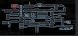
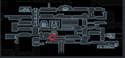
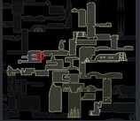
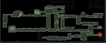
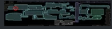
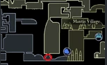
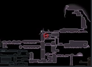
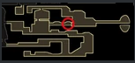
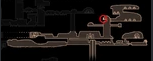
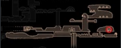

| No. | Prereq | Location | Image |
|---|---|---|---|
| 1 | find sly | dirtmouth; sly | |
| 2 | none | dirtmouth; sly | |
| 3 | none | dirtmouth; sly | |
| 4 | none | dirtmouth;sly | |
| 5 | mantis claw(recommended) | forgotten crossroads |  |
| 6 | rescue 5 grubs | forgotten crossroads | |
| 7 | mantis claw | forgotten crossroads |  |
| 8 | mantis claw | queens station |  |
| 9 | rescue bretta from fungal waste | dirtmouth | |
| 10 | lumafly lantern(recommended) | greenpath; stone sanctuary |  |
| 11 | royal water waterways |  |
|
| 12 | monarch | deepnest |  |
| 13 | monarch wings; defeat enraged guardian | crystal peak |  |
| 14 | bait hive guardian to break wall | hive |  |
| 15 | collect 1500 dream essence | resting grounds; seer |  |
| 16 | delicate flower quest | resting grounds; grey mourner |  |